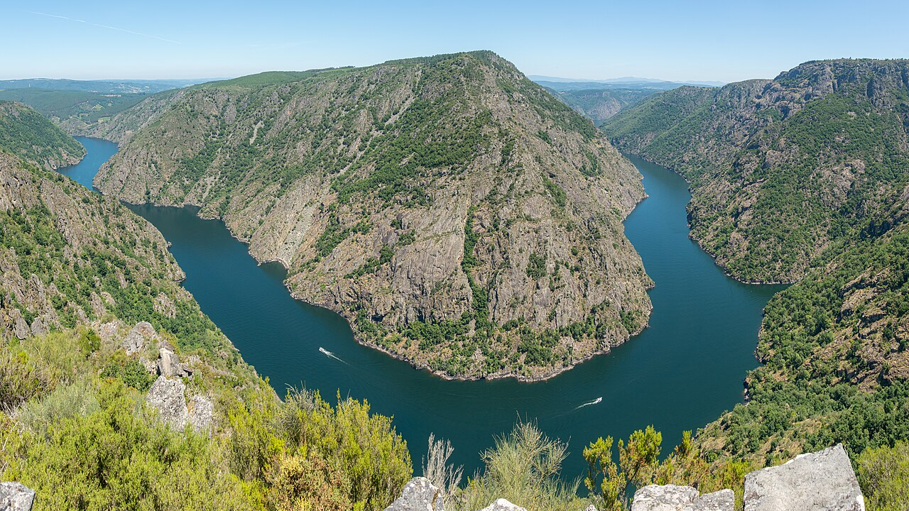
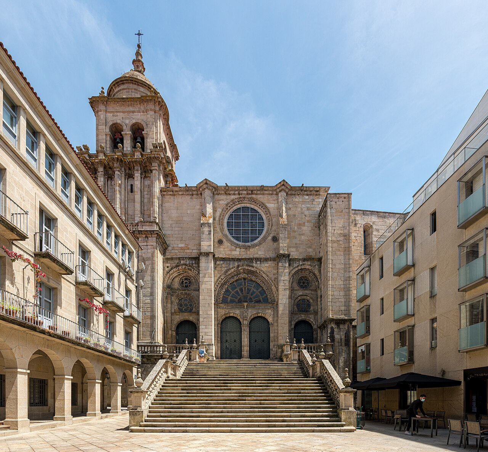

Bienvenido a mi página web.
Hola, soy Jorge.
Soy un economista español y próximamente comenzaré el doctorado en ETH Zúrich. Me incorporaré al Instituto Económico Suizo KOF como investigador doctoral.
Mis intereses se centran en la macroeconomía internacional, los shocks globales y el comercio internacional. Me interesa especialmente cómo se transmiten las perturbaciones entre países y cómo afectan a los hogares y a las empresas.
Me gusta mucho el deporte: disfruto del gimnasio, el esquí, el fútbol, el tenis y la Fórmula 1. También me gustan el ajedrez, visitar museos y simplemente salir a dar una vuelta.
Un poco de mis orígenes
Soy de Ourense, en Galicia, en el noroeste de España. Aquí puedes ver un pequeño rincón de mi ciudad y del cercano cañón del Sil.
{kind=link}

{kind=link}

Créditos de las fotografías
Fotografías del paisaje y la catedral de Fernando, a través de Wikimedia Commons: Cañón del Sil y Catedral de Ourense. Ambas con licencia CC BY-SA 4.0. Se utilizan versiones de menor resolución de Wikimedia; las fotografías no se han modificado de otro modo.
{kind=link}
{kind=link}